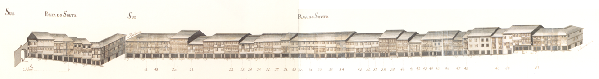

Rua do Souto Porta do Souto

Rua do Souto, Porta do Souto - vista norte.
Rua do Souto, Porta do Souto - vista sul.
Rua chave de todo o urbanismo e vida económica bracarense, a rua do Souto, terá sido, pelo menos desde o séc. XVII, a mais importante da cidade.Quando se construiram as muralhas de Braga pensou-se logo no possível crescimento citadino. A metade Sul,
já habitada e arruada com artérias cujo traçado remonta aos romanos, ficou protegida; a metade Norte continuou vazia, com campos, que lentamente se foram enchendo.Primeiro foi a rua Nova, mais tarde chamada do Campo; depois, em 1565, a dos Gatos ou da Misericórdia.A rua que delimitou as duas zonas foi a do Souto. Era longa, bem lançada e recta, unia o Paço dos Arcebispos com o Castelo e uma porta da muralha, no seu extremo.Não importa agora que tipo de casas teria naquela longínqua data. O Mappa mostra-nos que em 1750 era uma artéria muito bem organizada,
tendo quase todas as casas com três pisos, gelosias, muitas varandas de madeira cobertas também com gelosias e, no piso térreo,
grandes portas de madeira, permitindo o comércio. É verdadeiramente magnífico de beleza e de unidade este conjunto!
Pena foi que, nas décadas de 60 ou 70 do séc. XIX, todas as gelosias tivessem sido destruídas.No desenho das fachadas sobressaem apenas o conjunto monumental do largo do Paço, obra já dos Arcebispos que vão de D. Diogo de Sousa a D. Rodrigo de Moura Teles,
e as casas a seguir aos prazos n.° 2, com um belo trabalho de pedra nas janelas e n. ° 50, com os pisos superiores assentes sobre duas finas colunas.Hoje a estrutura das suas casas mantém-se, excepto no que respeita às gelosias. Em 1923 e 1954 a rua do Souto foi cortada pelas rua Justino Cruz
(que a ligou ao Campo da Vinha) e pela rua Francisco Sanches (no enfiamento da anterior, estabelecendo ligação para carros com o largo de S. João do Souto,
uma vez que a passagem de pessoas já era feita através da Casa do Passadiço).A zona denominada Porta do Souto, que corresponde à parte do Largo Barão de S. Martinho entre a rua dos Janes e a Foto Pelicano,
foi totalmente alterada em 1853, quando foi destruído o arco da Porta do Souto.Das 37 casas do lado Norte e 55 do lado Sul eram prazos do Cabido 16 e 33 respectivamente.- Casa 1: Enfiteuta - Agostinha Maia, viúva de Domingos Antunes da Rocha, ourives, Foro - 250 reis e 2 galinhas
- Casa 2: Enfiteuta - Luís Fernandes Braga, Foro - 320 reis e 2 galinhas
- Casa 3: Enfiteuta - Rev. Cónego João Pinheiro Leite , Foro - 620 reis e 2 galinhas
- Casa 4: Enfiteuta - Maria Ferreira, viúva de Custódio Barroso , Foro - 200 reis e 1 galinha
- Casa 5: Enfiteuta - Os herdeiros de André Loureiro , Foro - 600 reis e 3 galinhas
- Casa 6: Enfiteuta - Luísa Maria, Foro - 500 reis e 2 galinhas
- Casa 7: Enfiteuta - Carlos Veloso, Foro - 300 reis e 2 galinhas
- Casa 8: Enfiteuta - António Rebelo de Matos, abade de Tadim, Foro - 520 reis e 2 capões
- Casa 9: Enfiteuta - Isabel Maria da Silva, viúva do Dr. Santos de Araújo, Foro - 600 reis e 4 galinhas
- Casa 10: Enfiteuta - Dr. Domingos Soares, Foro - 800 reis e 2 galinhas
- Casa 11: Enfiteuta - Padre João da Silva , Foro - 600 reis e 2 galinhas
- Casa 12: Enfiteuta - Os herdeiros de Jerónimo Peixoto, Foro - 460 reis e 2 galinhas
- Casa 13: Enfiteuta - Madre Maria Clara, religiosa do Salvador , Foro - 650 reis e 5 galinhas
- Casa 14: Enfiteuta - Dr. António Pinheiro, Foro - 480 reis e 2 galinhas
- Casa 15: Enfiteuta - Manuel de Araújo, abade de Sta. Eufémia, Foro - 120 reis e 1 galinha
- Casa 16: Enfiteuta - Leonel da Mota, Foro - 120 reis e 1 galinha
- Casa 17: Enfiteuta - Ursula Josefa , Foro - 650 reis e 2 galinhas
- Casa 18: Enfiteuta - , Foro - None
- Casa 19: Enfiteuta - Jerónima Rodrigues, viúva de Frutuoso Marques , Foro - 600 reis e 2 galinhas
- Casa 20: Enfiteuta - Porcina Maria, viúva , Foro - 520 reis e 2 galinhas
- Casa 21: Enfiteuta - Luís Vaz Vieira e sua mulher, Antónia Maria Ferreira , Foro - 460 reis e 4 galinhas
- Casa 22: Enfiteuta - None, Foro - 75 reis (de censo)
- Casa 23: Enfiteuta - , Foro - 72 reis (de censo)
- Casa 24: Enfiteuta - , Foro - 13 reis e 5 pretos
- Casa 25: Enfiteuta - Manuel Moreira, cerigueiro , Foro - 430 e 2 galinhas
- Casa 26: Enfiteuta - Mariana da Costa, viúva de Pedro Mendes, Foro - 200 reis e 2 galinhas
- Casa 27: Enfiteuta - Dr. João de Matos , Foro - 400 reis e 2 galinhas
- Casa 28: Enfiteuta - Padre Baltazar Ferreira da Silva, Foro - 580 reis e 2 galinhas
- Casa 29: Enfiteuta - Domingos Martins Teixeira , Foro - 840 reis e 2 capões
- Casa 30: Enfiteuta - Os herdeiros de André Loureiro , Foro - 270 reis e 1 galinha
- Casa 31: Enfiteuta - Manuel Francisco da Cruz , Foro - 220 reis e 1 galinha
- Casa 32: Enfiteuta - Jácome de Brito Leite, Foro - 250 reis e 2 galinhas
- Casa 33: Enfiteuta - António Pereira Regalo, Foro - 500 reis e 3 galinhas
- Casa 34: Enfiteuta - Padre António da Silva , Foro - 300 reis
- Casa 35: Enfiteuta - , Foro - 13 reis e 2 pretos (de censo)
- Casa 36: Enfiteuta - , Foro - 13 reis e 2 pretos (de censo)
- Casa 37: Enfiteuta - , Foro - 13 reis e 2 pretos (de censo)
- Casa 38: Enfiteuta - Padre António da Rocha Ferreira, Foro - 370 reis e 2 galinhas
- Casa 39: Enfiteuta - , Foro - None
- Casa 40: Enfiteuta - Francisco Gomes, livreiro, Foro - 430 reis e 2 capões
- Casa 41 e 42: Enfiteuta - Padre José António de Lima , Foro - 600 reis e 2 capões
- Casa 43: Enfiteuta - Os herdeiros de Francisco Rodrigues da Costa, mercador , Foro - 300 reis e 2 capões
- Casa 44: Enfiteuta - Os herdeiros de Francisco Rodrigues da Costa, mercador , Foro - 220 reis e 1 galinha
- Casa 45: Enfiteuta - Dr. Manuel Gomes Lages, Foro - 340 reis e 2 galinhas
- Casa 46: Enfiteuta - Bernardina de Sena Maurícia, solteira, Foro - 480 reis
- Casa 47: Enfiteuta - Os herdeiros de João Marques da Veiga , Foro - 150 reis e 2 galinhas
- Casa 48: Enfiteuta - Dr. António Fernandes do Vale, médico , Foro - 600 reis, 2 capões e 2 galinhas
- Casa 49: Enfiteuta - José Loureiro , Foro - 430 reis e 2 galinhas
- Casa 50: Enfiteuta - Manuel Pereira da Costa, livreiro, Foro - 470 reis e 2 capões
- Casa 51: Enfiteuta - Domingos José de Melo , Foro - 265 reis e 2 galinhas